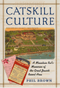
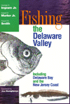
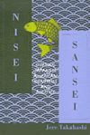
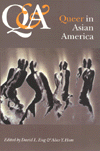
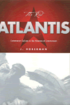
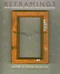
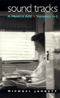
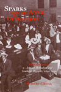
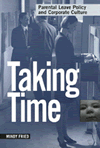
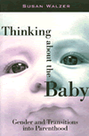

|
|
Aging
and the Law
An Interdisciplinary Reader
Frolik, Lawrence A.
A compilation of leading articles on the myriad issues of "elder
law"
690 pp • 7x10 • Fall 1998
paper 1-56639-653-0
EAN 978-1-56639-653-0
cloth 1-56639-652-2
EAN 978-1-56639-652-3
|
| 
|
Bacchanal!
The Carnival Culture of Trinidad
Mason, Peter
How carnival expresses and celebrates Trinidadian culture
192 pp • 6x9 • Fall 1998
paper 1-56639-663-8
EAN 978-1-56639-663-9
cloth 1-56639-662-X
EAN 978-1-56639-662-2
|
|
|
Before
Their Time
Adult Children's Experiences of Parental Suicide
Stimming, Mary, and Maureen Stimming
Honest first-person accounts by daughters and sons of the impact
of parental suicide on them and their families
240 pp • 5.5x8.25 • Fall 1998
paper 1-56639-655-7
EAN 978-1-56639-655-4
cloth 1-56639-654-9
EAN 978-1-56639-654-7
|
| 
|
Catskill
Culture
A Mountain Rat's Memories of the Great Jewish Resort Area
Brown, Phil
A search for one's roots in the resort hotels of the Jewish Catskills
304 pp • 7x10 • Fall 1998
cloth 1-56639-642-5
EAN 978-1-56639-642-4
|
| 
|
Fishing
the Delaware Valley
Ingram Jr., George H., Robert F. Marler Jr., Robert R. Smith, and
Joe Humphreys
Fishing tales from the Delaware Valley
New in Paperback!
256 pp • 6x9 • Fall 1997
paper 1-56639-665-4
EAN 978-1-56639-665-3
|
|
|
The
Global Emergence of Gay and Lesbian Politics
National Imprints of a Worldwide Movement
Adam, Barry D, Jan Willem Duyvendak, and Andre Krouwel
Rich accounts of gay and lesbian groups on five continents
448 pp • 6x9 • Fall 1998
paper 1-56639-645-X
EAN 978-1-56639-645-5
cloth 1-56639-644-1
EAN 978-1-56639-644-8
|
|
|
How
Did You Get to Be Mexican?
A White/Brown Man's Search for Identity
Johnson, Kevin R.
A readable account of a life spent in the borderlands between racial
identity
264 pp • 6x9 • Fall 1998
cloth 1-56639-650-6
EAN 978-1-56639-650-9
|
|
|
Images
of Animals
Anthropomorphism and Animal Mind
Crist, Eileen
A fascinating exploration of the language we use for animal behavior
256 pp • 6x9 • Fall 1998
cloth 1-56639-656-5
EAN 978-1-56639-656-1
|
|
|
Jim
Bunning
Baseball and Beyond
Dolson, Frank
A biography of the Hall of Famer who pitched no-hitters against
the sluggers of both leagues, took on sportswriters and baseball
leaders, and started a second career as a politician
320 pp • 6x9 • Fall 1998
cloth 1-56639-636-0
EAN 978-1-56639-636-3
|
|
|
Koppett's
Concise History of Major League Baseball
Koppett, Leonard
The one book to own to understand the changes in baseball-the-game
and baseball-the-business
521 pp • 7x10 • Fall 1998
cloth 1-56639-638-7
EAN 978-1-56639-638-7
|
|
|
Men
Who Sell Sex
International Perspectives on Male Prostitution and AIDS
Aggleton, Peter
An authoritative collection of vivid ethnographies and policy recommendations
from both industrialized and developing countries
296 pp • 6x9 • Fall 1998
paper 1-56639-669-7
EAN 978-1-56639-669-1
cloth 1-56639-668-9
EAN 978-1-56639-668-4
|
| 
|
Nisei/Sansei
Shifting Japanese American Identities and Politics
Takahashi, Jere
A fresh look at the many and diverse political strategies that
forged a Japanese American identity
New in Paperback!
280 pp • 6x9 • Fall 1997
paper 1-56639-659-X
EAN 978-1-56639-659-2
|
|
|
Orientals
Asian Americans in Popular Culture
Lee, Robert G.
A compelling study of how the label "oriental" came into being
288 pp • 6x9 • Fall 1998
cloth 1-56639-658-1
EAN 978-1-56639-658-5
|
|
|
Pacifica
Radio
The Rise of an Alternative Network
Lasar, Matthew
A profile of America's first listener-supported alternative radio
station
320 pp • 6x9 • Fall 1998
cloth 1-56639-660-3
EAN 978-1-56639-660-8
|
|
|
Paradise,
New York
A Novel
Pollack, Eileen
A funny and moving first novel of nostalgia for Catskills hotel
life
288 pp • 5x9 • Fall 1998
cloth 1-56639-657-3
EAN 978-1-56639-657-8
|
| 
|
Q
& A
Queer in Asian America
Eng, David L., and Alice Y. Hom
A spirited collection of essays, personal testimonies, fiction,
and art on what it means to be queer in Asian-America now
445 pp • 7x10 • Fall 1998
paper 1-56639-640-9
EAN 978-1-56639-640-0
cloth 1-56639-639-5
EAN 978-1-56639-639-4
|
| 
|
The
Red Atlantis
Communist Culture in the Absence of Communism
Hoberman, J.
A delightful and witty examination of Communism as an art form
326 pp • 5x9 • Fall 1998
cloth 1-56639-643-3
EAN 978-1-56639-643-1
|
| 
|
Reframings
New American Feminist Photographies
Neumaier, Diane, and Anne Wilkes Tucker
A remarkable collection of feminist art-works and critical essays
exposes the diverse cultural representations of women
New in Paperback!
336 pp • 8.5x10 • Fall 1995
paper 1-56639-332-9
EAN 978-1-56639-332-4
|
| 
|
Sound
Tracks
A Musical ABC, Volumes 1-3
Jarrett, Michael
A witty and astute reference book on popular music
304 pp • 5.5x9 • Fall 1998
cloth 1-56639-641-7
EAN 978-1-56639-641-7
|
| 
|
Sparks
from the Anvil of Oppression
Philadelphia's African Methodists and Southern Migrants, 1890-1940
Gregg, Robert
How the African Methodist Churches in Philadelphia coped with the
Great Migration
New in Paperback!
272 pp • 6x9 • Fall 1993
paper 1-56639-664-6
EAN 978-1-56639-664-6
|
| 
|
Taking
Time
Parental Leave Policy and Corporate Culture
Fried, Mindy
How flexible is the American workplace in supporting the family
needs of employees, when it involves the temporary loss of their
labor?
256 pp • 5.5x8.25 • Fall 1998
paper 1-56639-647-6
EAN 978-1-56639-647-9
cloth 1-56639-646-8
EAN 978-1-56639-646-2
|
| 
|
Thinking
about the Baby
Gender and Transitions into Parenthood
Walzer, Susan
Interviews with new parents about the gendered roles of mother
and father
224 pp • 5.5x8.25 • Fall 1998
paper 1-56639-631-X
EAN 978-1-56639-631-8
cloth 1-56639-630-1
EAN 978-1-56639-630-1
|
|
|
The
Two-in-One
Walking with Smokie, Walking with Blindness
Michalko, Rod
The author acquires a guide dog and a new identity
256 pp • 5.5x8.25 • Fall 1998
paper 1-56639-649-2
EAN 978-1-56639-649-3
cloth 1-56639-648-4
EAN 978-1-56639-648-6
|
|
|
Voice
Over
The Making of Black Radio
Barlow, William
The whole story of the making of Black radio
334 pp • 6x9 • Fall 1998
paper 1-56639-667-0
EAN 978-1-56639-667-7
cloth 1-56639-666-2
EAN 978-1-56639-666-0
|